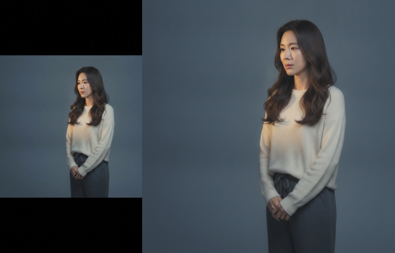
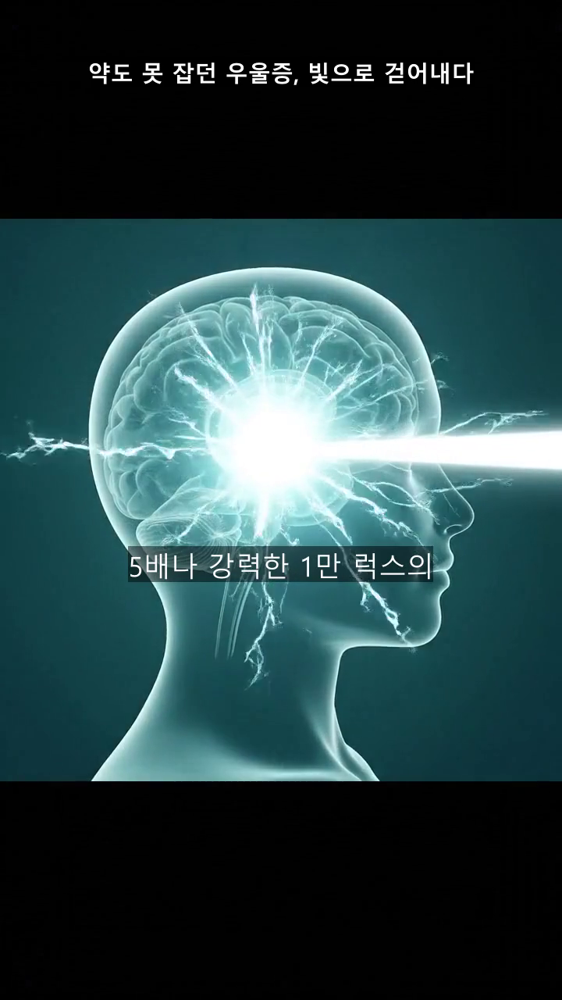

01
스펀지클럽 2기 · 5조 털보(차지원) · 4주차
광고영상 OS
PRD를 세우고, 일주일 내내
그 문서에 부딪힌 기록
잘 만든 광고 영상 하나를 넣으면, 내 제품 광고로 다시 만들어 주는 프로그램을 만들고 있습니다.
02
처음 보는 분을 위한 30초 설명
무엇을 만들고 있나
혼자서 광고 계정 여러 개를 돌리는 마케터에게, 영상 제작은 반나절이 통째로 사라지는 일입니다. 그래서:
경쟁사의 잘 되는 영상 입력→
왜 잘 되는지 구조 분석→
내 제품 이야기로 다시 쓰기→
이미지·더빙·영상 생성→
완성본
전부 자동은 아닙니다. 중간중간 사람이 확인하고 승인하는 관문(게이트)이 있고, 이게 이 도구의 핵심 설계입니다. 겉모습을 베끼는 게 아니라 "왜 통했는가"를 옮기는 것이 목표입니다.
이 도구가 실제로 만든 장면 — 제품 사용 컷 (픽사풍 3D, 이미지 AI 생성)
같은 영상의 원리 설명 장면 — 빛이 뇌 속 생체시계를 깨우는 CG
03
과제 1 · PRD
PRD를 "헌법"으로 세웠다
3주간 만들고 부수며 검증된 내용만 담아, 앞으로의 모든 결정이 대조할 기준 문서를 픽스했습니다.
지키는 것
- 복제가 아니라 번역 — 레퍼런스에서 가져오는 건 구조와 기법뿐. 내용과 정서는 내 제품에서 다시 그린다
- 결재하는 자동화 — 품질을 운에 맡기지 않고, 게이트마다 사람이 확인·승인한다
만들지 않을 것
- 레퍼런스 없이 무에서 창작하는 기능
- 스크립트만으로 영상을 만드는 기능
- 완전 무인 자동화 (게이트 제거)
- 멀티유저 · 클라우드 배포
그리고 규칙 하나: 새 기능 아이디어는 전부 이 문서에 대조한다. 가치를 지탱하지 않거나 "만들지 않을 것"에 걸리면, 만들지 않는다.
PRD 내용 ① · 문제와 사람
누구의, 어떤 고통을 푸는가
문제 정의
- 영상 소재 1편을 손수 만들면 반나절~하루가 통째로 사라진다 — 계정 운영·전략에서 빼오는 시간
- 경쟁사의 뛰어난 레퍼런스는 눈앞에 있는데, 그걸 우리 제품용으로 다시 만들 리소스가 없다
- 지금의 대체재: 다른 업무를 포기하고 손수 만들거나, 영상 자체를 포기 — 어느 쪽이든 "잘 터지는 레퍼런스를 두고도 못 쓰는" 상태
페르소나 — 한 명으로 좁히면
월요일에 경쟁사의 떡상 소재를 발견했고, 이번 주 소재 교체 전까지 우리 제품 버전이 필요한 1인 마케터. 편집 툴은 다룰 줄 모르거나 다룰 시간이 없다.
실제로 뱉는 문장:
"영상 레퍼런스 하나 던져주면
뚝딱하고 만들어주는 직원 어디 없나"
소구 방식은 이 페르소나의 언어 그대로 — "레퍼런스 하나 던지면, 우리 제품 광고가 되어 나온다."
PRD 내용 ② · 기능과 판정
무엇을 만들고, 무엇으로 성공을 재는가
핵심 기능 5 — 전부 "번역"을 지탱
- 전략 역설계 → 소구점 매칭 — 구조를 먼저 확정하고, 거기 가장 잘 녹는 내 제품의 강점을 고른다
- 탑다운 골격 — 구조 설계도(씬 수·역할·시간)를 먼저 확정. 씬 수 = 제작비
- 씬별 연출 선언 + 무드 앵커 — 분위기·제품 노출을 씬마다 선언하고 기준 이미지로 일관성 유지
- 씬별 스토리보드 — 그림 단계에서 검수하고, 영상 AI에는 시작·끝 장면을 고정값으로
- 비용 결재 게이트 — 저가 단계(이미지) 전량 검수 후에만 고가 단계(영상) 진입
성공 기준 — "좋아요"가 아니라 행동으로
- 영상 1편이 사람 결재 3~4회 외의 개입 없이 완주되는가
- 씬 재생성(반려) 횟수가 회차마다 줄어드는가 — 이번 주 31회 → 7회
- 만든 영상이 실제 광고 계정에 집행되는가 — 최종 판정자는 만족감이 아니라 집행 결정
04
PRD가 실제로 일한 순간
기능 아이디어가 기각당했다
"레퍼런스 수백 개를 미리 분석해서 패턴을 학습해두면 어떨까?"
그럴듯해 보였지만 PRD에 대조하니 답이 나왔습니다. 지금 병목은 분석이 아니라 출력의 일관성이고, 미리 쌓은 패턴은 오히려 "이 레퍼런스가 터진 고유한 이유"를 평균으로 뭉갤 위험이 있었습니다.
기능을 기각당해 본 순간, PRD가 처음으로 "살아있는 문서"라고 느꼈습니다. 대신 방향을 튼 곳이 다음 장입니다.
05
이 도구의 핵심 구조
피드백을 1회용으로 쓰지 않는다
— 세 개의 축적 장치
사람이 준 피드백이 그 자리의 수정으로 끝나면, 다음 영상에서 같은 지적을 또 하게 됩니다. 그래서 피드백의 종류마다 저장되는 자리를 만들었습니다. 한 번 가르치면 이후의 모든 생성이 달라집니다.
① 타깃 인사이트
기획자의 피드백이 저장되는 곳. "타깃이 원하는 건 부작용 회피가 아니라, 약도 안 듣던 우울에서 벗어나는 것" — 이런 통찰을 제품 프로필에 영구 등재하면, 앞으로 모든 대본이 이 위에서 생성됩니다.
② 케이스북
완성한 회차의 경험이 저장되는 곳. 회차마다 "이 유형의 레퍼런스에서 무엇이 통했고 무엇이 사고였는지"를 패턴 장부로 기록 — 비슷한 레퍼런스가 오면 그 노하우를 물려받고 시작합니다.
③ 교정 사전
언어 감각의 피드백이 저장되는 곳. "이 표현은 번역투다 → 이렇게 써라"를 지적할 때마다 사전에 쌓이고, 다음 생성부터 자동 반영 — 같은 어색함을 두 번 지적하지 않게 됩니다.
공통 원리: 피드백은 받는 것보다 쌓이는 구조가 중요하다. 쌓이면 복리가 됩니다.
06
이번 주 가장 큰 발견
조용히 실패하고 있던 기능을
실측으로 찾아냈다
영상 AI(Veo)에는 "시작 장면과 끝 장면을 지정하면 그 사이를 채워주는" 기능이 있습니다. 우리 공정의 핵심인데 — 확인해 보니 지금까지 단 한 번도 작동한 적이 없었습니다. 실패하면 조용히 시작 장면만으로 생성하는 예비 동작이 이 사실을 가리고 있었습니다.
원인 — 문서에 없는 조건
오류 응답은 과금되지 않는 점을 이용해 요청 형식을 하나씩 실험했습니다. 결론: 이 기능은 영상 길이를 정확히 8초로 요청할 때만 받아들여집니다. 우리는 늘 4~6초로 요청하고 있었습니다.
고치고 나서
끝 장면이 고정되니 영상이 의도대로 도착하기 시작했고, 마음에 안 들어 다시 만드는 횟수가 한 회차 31회에서 7회로 줄었습니다.
실패의 증거 — 왼쪽: 영상이 실제로 끝난 장면(여전히 누워 있음) / 오른쪽: 우리가 지정했던 끝 장면(일어선 모습). 지정한 끝 장면이 완전히 무시되고 있었습니다.

8초로 고친 뒤 — 왼쪽: 생성된 영상의 마지막 장면 / 오른쪽: 지정한 끝 장면. 자세·의상·조명까지 일치. 기능이 살아났습니다.
교훈: "되고 있겠지"라고 믿는 기능일수록 실제 출력물로 확인해야 합니다. 조용한 실패가 제일 비쌉니다.
07
공정 개편 ① 대본
조각난 문장을 한 편의 글로
완성본을 읽어보니 씬마다 대사는 훌륭한데, 이어 읽으면 서로 다른 글 8개를 붙여 놓은 느낌이었습니다. 원인은 AI에게 "씬마다 지킬 것"만 잔뜩 주고, "전체가 한 사람의 이야기여야 한다"는 요구는 한 번도 안 했다는 것.
고친 것
- "전체 대사는 한 사람이 처음부터 끝까지 말하는 하나의 글" — 최우선 규칙으로 추가
- 번역투 교정 단계 신설 — "이 빛"(this light 직역), "기대보기로 했어요" 같은 어색한 한국어를 다시 씀
배운 것
규칙을 쌓을수록 문장은 오히려 뻣뻣해졌습니다. 필요한 건 규칙 하나 더가 아니라, 자유롭게 다시 쓸 권한과 구체적인 예시(→ 교정 사전)였습니다.
08
공정 개편 ② 순서를 뒤집다
추정을 버리고, 목소리를 먼저
완성본에서 씬과 씬 사이가 어색하게 비는 문제의 뿌리는 "씬 길이를 글자 수로 추정해서 영상을 먼저 만들고, 더빙을 나중에 끼워 넣는" 순서였습니다. 추정이 실제 발화보다 길면 그 차이가 전부 침묵이 됩니다.
대본 확정→
목소리 캐스팅→
더빙을 먼저 생성 · 들어보며 조율→
이미지→
영상→
조립
더빙이 먼저 나오면 씬 길이는 추정이 아니라 실제 음성 길이가 됩니다. 영상은 그 길이에 맞춰 만들어지고, 빈 침묵은 구조적으로 생길 수 없게 됩니다. 더빙을 듣다가 대사를 고치면 그 씬만 자동으로 다시 녹음됩니다.
09
그 외 다듬은 것들
실사용이 알려준 세부 수리
자막을 의미 단위로
긴 문장을 통째로 띄우지 않고 짧은 호흡으로 나눠 순차 표시. "뇌 속"의 '속'처럼 앞말에 붙어야 하는 말이 다음 줄로 밀리지 않도록, 한국어 문법 경계에서만 끊게 했습니다.
씬 안에서 카메라 고정
한 씬의 시작·끝 장면 구도가 다르면 영상 AI가 그 사이를 화면 겹침으로 때워 유령 같은 프레임이 생깁니다. 씬 안에서는 카메라를 완전히 고정하는 규칙으로 해결.
제품명을 말하지 않는다
레퍼런스가 그랬듯, 대사에서 브랜드명 대신 정체성 키워드("시교차상핵자극기")만 사용. 광고 티를 줄이고 카테고리 자체를 각인시키는 방식입니다.
길이 상한을 명문화
1분 9초짜리 완성본이 "늘어진다"는 판정을 받고, 목표 40~50초·상한 60초를 설계 단계부터 강제하는 기준으로 박았습니다.

자막 개선 후 실제 화면 — 긴 문장("알고 보니 형광등보다 5배나 강력한 1만 럭스의 빛이…")이 4줄 블록으로 한꺼번에 뜨던 것을, "5배나 강력한 1만 럭스의"처럼 짧은 소절 하나씩 순차 표시로 바꿨습니다. 폰트도 1.3배 키웠습니다.
10
숫자로 보는 한 주
측정할 수 있게 만들었더니
PRD의 성공 기준을 "좋아졌다"가 아니라 숫자로 판정하기 위해, 회차마다 재생성·오류 횟수를 자동 집계하는 리포트를 붙였습니다.
| 직전 회차 | 이번 회차 |
|---|
| 씬 재생성 (반려) 횟수 | 31회 | 7회 (−77%) |
| 자동 테스트 | 470개 | 745개 |
| 사람 결재 게이트 | 4단계 | 7단계 (구조 승인·더빙 조율 등 신설) |
재생성이 준 것은 끝 장면 고정이 살아난 효과가 큽니다. 다음 회차부터는 이 숫자가 공정 개선의 성적표가 됩니다.
11
과제 2 · 유저 피드백
외부 피드백은 받지 못했다
피드백을 받기로 한 분들이 개인 사정으로 사무실에 나오지 못했고, 이 도구는 돌릴 때마다 실제 비용(이미지·영상 생성)이 나가는 구조라 준비 없이 맡기기 어려워 무리하지 않았습니다. 가상 페르소나 피드백과 함께 다음 주로 이월합니다.
대신 한 걸음 — 기획자 피드백을 "타깃 인사이트"로 저장
제품 기획자의 대본 피드백에서, 만든 사람 눈에는 안 보이던 것이 보였습니다. 이걸 앞서 소개한 축적 장치 ①에 저장해서, 이후의 모든 대본이 그 통찰 위에서 생성되게 했습니다. 다음 주 외부 피드백도 같은 방식으로 시스템에 쌓을 준비가 돼 있습니다.
12
한 주의 교훈
세 가지를 배웠다
1 · 전용 자리가 없는 정보는 파이프라인에서 죽는다
분석 단계가 중요한 걸 "봤어도", 그게 산문 속 한 구절이면 다음 단계로 넘어가며 증발합니다. 살리고 싶은 정보에는 전용 칸과, 그 칸을 읽는 다음 단계를 만들어야 합니다.
2 · 추정하지 말고 실측하라
끝 장면 기능도, 씬 길이도, "될 것이다"가 아니라 실험과 실제 측정이 답을 줬습니다. 이번 주에 고친 문제의 대부분은 추정이 만든 문제였습니다.
3 · PRD는 쓰는 문서가 아니라 부딪히는 관문이다
잘 쓴 문서보다, 기능 하나를 실제로 기각해 본 문서가 팀(사람+AI)을 지킵니다.
13
다음 주
새 제품, 새 공정, 그리고 피드백
- 두 번째 제품(구강 케어 기기)으로 개편된 공정 전체를 처음부터 검증
- 이월한 유저 피드백 진행 — 실제 2명 + 가상 페르소나 패널
- 재생성 횟수 리포트로 "공정이 정말 좋아지고 있는가"를 숫자로 확인
감사합니다 — 5조 털보(차지원)